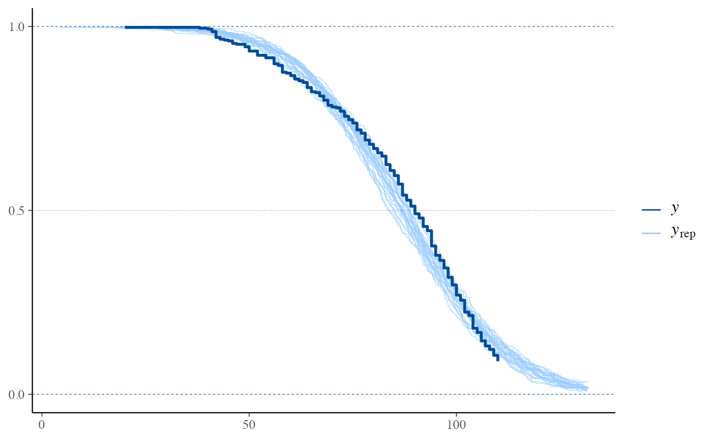

Compare the empirical distribution of censored data y to the
distributions of simulated/replicated data yrep from the posterior
predictive distribution. See the Plot Descriptions section, below, for
details.
Although some of the other bayesplot plots can be used with censored
data, ppc_km_overlay() is currently the only plotting function designed
specifically for censored data. We encourage you to suggest or contribute
additional plots at
github.com/stan-dev/bayesplot.
ppc_km_overlay(y, yrep, ..., status_y, size = 0.25, alpha = 0.7)
| y | A vector of observations. See Details. |
|---|---|
| yrep | An \(S\) by \(N\) matrix of draws from the posterior
predictive distribution, where \(S\) is the size of the posterior sample
(or subset of the posterior sample used to generate |
| ... | Currently unused. |
| status_y | The status indicator for the observations from |
| size, alpha | Passed to the appropriate geom to control the appearance of
the |
A ggplot object that can be further customized using the ggplot2 package.
ppc_km_overlay()Empirical CCDF estimates of each dataset (row) in yrep are overlaid,
with the Kaplan-Meier estimate (Kaplan and Meier, 1958) for y itself on
top (and in a darker shade). This is a PPC suitable for right-censored
y. Note that the replicated data from yrep is assumed to be
uncensored.
Gelman, A., Carlin, J. B., Stern, H. S., Dunson, D. B., Vehtari, A., and Rubin, D. B. (2013). Bayesian Data Analysis. Chapman & Hall/CRC Press, London, third edition. (Ch. 6)
Kaplan, E. L. and Meier, P. (1958). Nonparametric estimation from incomplete observations. Journal of the American Statistical Association. 53(282), 457--481. doi:10.1080/01621459.1958.10501452.
Other PPCs:
PPC-discrete,
PPC-distributions,
PPC-errors,
PPC-intervals,
PPC-loo,
PPC-overview,
PPC-scatterplots,
PPC-test-statistics
color_scheme_set("brightblue") y <- example_y_data() # For illustrative purposes, (right-)censor values y > 110: status_y <- as.numeric(y <= 110) y <- pmin(y, 110) # In reality, the replicated data (yrep) would be obtained from a # model which takes the censoring of y properly into account. Here, # for illustrative purposes, we simply use example_yrep_draws(): yrep <- example_yrep_draws() dim(yrep)#> [1] 500 434# \donttest{ ppc_km_overlay(y, yrep[1:25, ], status_y = status_y)# }